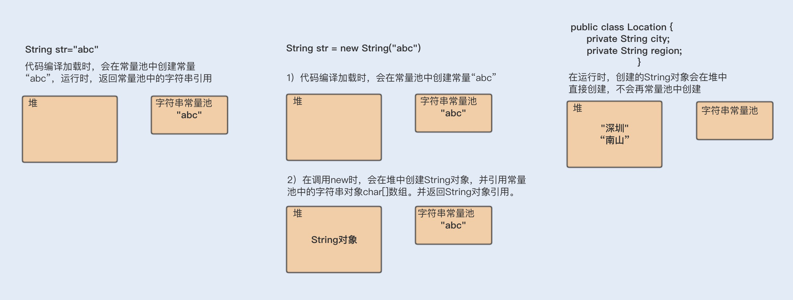

String 对象是如何实现的？
在 Java 语言中，Sun 公司的工程师们对 String 对象做了大量的优化，来节约内存空间，提升 String 对象在系统中的性能。一起来看看优化过程，如下图所示：

1. 在 Java6 以及之前的版本中，String 对象是对 char 数组进行了封装实现的对象，主要有四个成员变量：char 数组、偏移量 offset、字符数量 count、哈希值 hash。
String 对象是通过 offset 和 count 两个属性来定位 char[] 数组，获取字符串。这么做可以高效、快速地共享数组对象，同时节省内存空间，但这种方式很有可能会导致内存泄漏。
2. 从 Java7 版本开始到 Java8 版本，Java 对 String 类做了一些改变。String 类中不再有 offset 和 count 两个变量了。这样的好处是 String 对象占用的内存稍微少了些，同时，String.substring 方法也不再共享 char[]，从而解决了使用该方法可能导致的内存泄漏问题。
3. 从 Java9 版本开始,工程师将 char[] 字段改为了 byte[] 字段，又维护了一个新的属性 coder，它是一个编码格式的标识。
工程师为什么这样修改呢？
我们知道一个 char 字符占 16 位，2 个字节。这个情况下，存储单字节编码内的字符（占一个字节的字符）就显得非常浪费。JDK1.9 的 String 类为了节约内存空间，于是使用了占 8 位，1 个字节的 byte 数组来存放字符串。
String 对象的不可变性
了解了 String 对象的实现后，你有没有发现在实现代码中 String 类被 final 关键字修饰了，而且变量 char 数组也被 final 修饰了。
Java 这样做的好处在哪里呢？
第一，保证 String 对象的安全性。假设 String 对象是可变的，那么 String 对象将可能被恶意修改。
第二，保证 hash 属性值不会频繁变更，确保了唯一性，使得类似 HashMap 容器才能实现相应的 key-value 缓存功能。
第三，可以实现字符串常量池。在 Java 中，通常有两种创建字符串对象的方式，一种是通过字符串常量的方式创建，如 String str=“abc”；另一种是字符串变量通过 new 形式的创建，如 String str = new String(“abc”)。
当代码中使用第一种方式创建字符串对象时，JVM 首先会检查该对象是否在字符串常量池中，如果在，就返回该对象引用，否则新的字符串将在常量池中被创建。这种方式可以减少同一个值的字符串对象的重复创建，节约内存。
String str = new String(“abc”) 这种方式，首先在编译类文件时，”abc”常量字符串将会放入到常量结构中，在类加载时，“abc”将会在常量池中创建；其次，在调用 new 时，JVM 命令将会调用 String 的构造函数，同时引用常量池中的”abc” 字符串，在堆内存中创建一个 String 对象；最后，str 将引用 String 对象。
String 对象的优化
1. 如何构建超大字符串？
编程过程中，字符串的拼接很常见。前面我讲过 String 对象是不可变的，如果我们使用 String 对象相加，拼接我们想要的字符串，是不是就会产生多个对象呢？例如以下代码：
1 | String str= "ab" + "cd" + "ef"; |
分析代码可知：首先会生成 ab 对象，再生成 abcd 对象，最后生成 abcdef 对象，从理论上来说，这段代码是低效的。
但实际运行中，我们发现只有一个对象生成，这是为什么呢？难道我们的理论判断错了？我们再来看编译后的代码，你会发现编译器自动优化了这行代码，如下：
1 | String str= "abcdef"; |
上面我介绍的是字符串常量的累计，我们再来看看字符串变量的累计又是怎样的呢？
1 | String str = "abcdef"; |
上面的代码编译后，你可以看到编译器同样对这段代码进行了优化。不难发现，Java 在进行字符串的拼接时，偏向使用 StringBuilder，这样可以提高程序的效率。
1 | String str = "abcdef"; |
综上已知:即使使用 + 号作为字符串的拼接，也一样可以被编译器优化成 StringBuilder 的方式。但再细致些，你会发现在编译器优化的代码中，每次循环都会生成一个新的 StringBuilder 实例，同样也会降低系统的性能。
所以平时做字符串拼接的时候，我建议你还是要显示地使用 String Builder 来提升系统性能。
如果在多线程编程中，String 对象的拼接涉及到线程安全，你可以使用 StringBuffer。但是要注意，由于 StringBuffer 是线程安全的，涉及到锁竞争，所以从性能上来说，要比 StringBuilder 差一些。
2. 如何使用 String.intern 节省内存？
讲完了构建字符串，我们再来讨论下 String 对象的存储问题。先看一个案例。
Twitter 每次发布消息状态的时候，都会产生一个地址信息，以当时 Twitter 用户的规模预估，服务器需要 32G 的内存来存储地址信息。
1 | public class Location { |
考虑到其中有很多用户在地址信息上是有重合的，比如，国家、省份、城市等，这时就可以将这部分信息单独列出一个类，以减少重复，代码如下：
1 |
|
通过优化，数据存储大小减到了 20G 左右。但对于内存存储这个数据来说，依然很大，怎么办呢？
这个案例来自一位 Twitter 工程师在 QCon 全球软件开发大会上的演讲，他们想到的解决方法，就是使用 String.intern 来节省内存空间，从而优化 String 对象的存储。
具体做法就是，在每次赋值的时候使用 String 的 intern 方法，如果常量池中有相同值，就会重复使用该对象，返回对象引用，这样一开始的对象就可以被回收掉。这种方式可以使重复性非常高的地址信息存储大小从 20G 降到几百兆。
1 | SharedLocation sharedLocation = new SharedLocation(); |
为了更好地理解，我们再来通过一个简单的例子，回顾下其中的原理：
1 | String a =new String("abc").intern(); |
输出结果：
1 | a==b |
在字符串常量中，默认会将对象放入常量池；在字符串变量中，对象是会创建在堆内存中，同时也会在常量池中创建一个字符串对象，引用赋值到堆内存对象中，并返回堆内存对象引用。
如果调用 intern 方法，会去查看字符串常量池中是否有等于该对象的字符串，如果没有，就在常量池中新增该对象，并返回该对象引用；如果有，就返回常量池中的字符串引用。堆内存中原有的对象由于没有引用指向它，将会通过垃圾回收器回收。
了解了原理，我们再一起看看上边的例子。
在一开始创建 a 变量时，会在堆内存中创建一个对象，同时会在加载类时，在常量池中创建一个字符串对象，在调用 intern 方法之后，会去常量池中查找是否有等于该字符串的对象，有就返回引用。
在创建 b 字符串变量时，也会在堆中创建一个对象，此时常量池中有该字符串对象，就不再创建。调用 intern 方法则会去常量池中判断是否有等于该字符串的对象，发现有等于”abc”字符串的对象，就直接返回引用。而在堆内存中的对象，由于没有引用指向它，将会被垃圾回收。所以 a 和 b 引用的是同一个对象。
下面我用一张图来总结下 String 字符串的创建分配内存地址情况：

使用 intern 方法需要注意的一点是，一定要结合实际场景。因为常量池的实现是类似于一个 HashTable 的实现方式，HashTable 存储的数据越大，遍历的时间复杂度就会增加。如果数据过大，会增加整个字符串常量池的负担。
3. 如何使用字符串的分割方法？
最后我想跟你聊聊字符串的分割，这种方法在编码中也很最常见。Split() 方法使用了正则表达式实现了其强大的分割功能，而正则表达式的性能是非常不稳定的，使用不恰当会引起回溯问题，很可能导致 CPU 居高不下。
所以我们应该慎重使用 Split() 方法，我们可以用 String.indexOf() 方法代替 Split() 方法完成字符串的分割。如果实在无法满足需求，你就在使用 Split() 方法时，对回溯问题加以重视就可以了。
总结
这一讲中，我们认识到做好 String 字符串性能优化，可以提高系统的整体性能。在这个理论基础上，Java 版本在迭代中通过不断地更改成员变量，节约内存空间，对 String 对象进行优化。
我们还特别提到了 String 对象的不可变性，正是这个特性实现了字符串常量池，通过减少同一个值的字符串对象的重复创建，进一步节约内存。
但也是因为这个特性，我们在做长字符串拼接时，需要显示使用 StringBuilder，以提高字符串的拼接性能。最后，在优化方面，我们还可以使用 intern 方法，让变量字符串对象重复使用常量池中相同值的对象，进而节约内存。
最后再分享一个个人观点。那就是千里之堤，溃于蚁穴。日常编程中，我们往往可能就是对一个小小的字符串了解不够深入，使用不够恰当，从而引发线上事故。